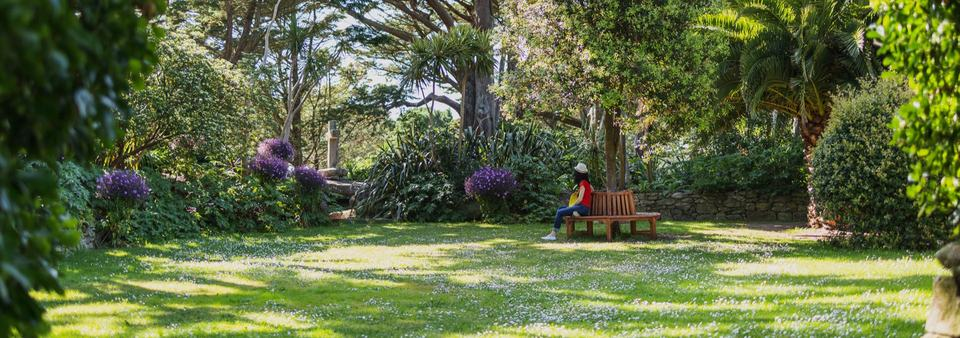

Tonte de pelouse
Une pelouse nette et régulière pour un jardin agréable à vivre, avec un service de tonte pensé pour les particuliers du secteur de Morlaix.
Vous manquez de temps pour entretenir votre jardin ? Denis Cloarec vous propose un service sérieux et soigné pour garder vos extérieurs propres toute l’année.
Entretien extérieur local pour particuliers, avec un contact direct et rassurant.
Un seul contact, proche de chez vous.
Respect des lieux et finitions soignées.
Interventions adaptées à vos besoins, ponctuelles ou régulières.
Une pelouse nette et régulière pour un jardin agréable à vivre, avec un service de tonte pensé pour les particuliers du secteur de Morlaix.
Pour retrouver des haies propres, harmonieuses et bien entretenues toute l’année, sans laisser les tailles s’accumuler.
Nettoyage des massifs, allées et bordures pour des extérieurs plus nets et plus faciles à entretenir au quotidien.
Ramassage, remise au propre et entretien courant pour garder une maison accueillante et des extérieurs toujours présentables.
Entretien léger des arbres et arbustes pour conserver des extérieurs sûrs, propres et équilibrés au fil des saisons.
Des interventions pratiques pour soulager les tâches du quotidien et vous faire gagner du temps à la maison.
Ici, on ne vend pas juste un passage de tondeuse. On vend du temps gagné, de la tranquillité et un extérieur propre sans effort.

Une présence de proximité pour garder vos espaces verts propres, lisibles et accueillants.
Denis Cloarec, 57 ans, propose ses services d’entretien extérieur aux particuliers de Morlaix et ses environs. Passionné par le travail bien fait, il intervient avec sérieux pour entretenir jardins et extérieurs tout au long de l’année.
L’objectif est simple : vous faire gagner du temps, vous éviter les contraintes d’entretien et vous laisser profiter d’un extérieur net, accueillant et bien tenu.
Un contact direct, simple et rassurant pour organiser chaque intervention.
Chaque intervention est pensée pour laisser un résultat propre et durable.
Intervention rapide sur :
Autres communes possibles sur demande.
Quelques mises en situation visuelles pour montrer le type de rendu propre et soigné recherché sur chaque intervention.
Remise en forme nette et homogène pour retrouver un extérieur plus soigné.
Un passage complet pour redonner de la clarté et de la tenue aux extérieurs.
Allées, bordures et zones de passage remises au propre rapidement.
Une présence suivie pour conserver un jardin propre et accueillant toute l’année.
Contactez Denis Cloarec pour un service rapide, sérieux et efficace.
Pas de complication : un appel, un email ou un message rapide suffisent pour lancer votre demande.
Pour vos recherches locales : entretien jardin Morlaix, tonte pelouse Morlaix, taille haie Morlaix, jardinier Morlaix, entretien espaces verts Finistère.